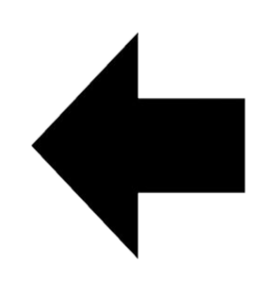

TENTANG SAYA
Nama Saya adalah Andrea panca pramudita. Saya adalah seorang MAHASISWA di STMIK IKMI Cirebon.
Passion saya dibidang pendidikan dan pemrograman. Motto belajar saya adalah "Ilmu apa yang Anda petik hari ini?", dan menurut saya cara terbaik upgrade ilmu adalah dengan membagikannya.
Slogan: "Belajar dengan orang yang mampu atau dengan orang yang tidak mampu supaya biar sama-sama belajar
